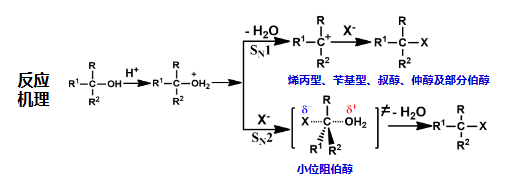
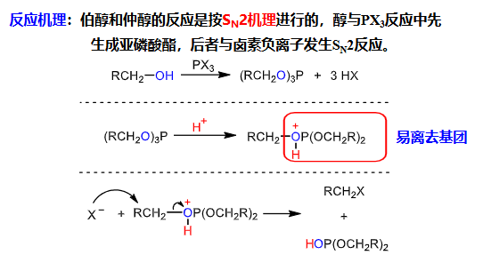
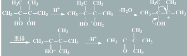
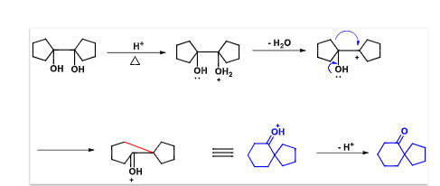

有机化学7-1醇酚醚7-1 20260430.pdf 有机化学7-2醇酚醚7-2 20260507.pdf
醇
命名 命名
- 主链：含羟基的最长碳链，编号：从最靠近羟基一端开始，并使其他取代基位次尽可能小
- 不饱和醇：主链要同时包含羟基和双键三键
- -Ar为取代基
- 多元醇标明羟基的编号和个数
化学性质分析

反应
- 酸性 酸碱反应：ROH+Na→RONa
- 碱性 酸碱反应：和无机酸成酯，比如和硫酸
- 亲核取代 取代
- 与HX反应：ROH+HX→RX+
- 一般需要酸催化，因为羟基不是好的L L 控pH反应 亲核取代 取代 立体选择性
- ：先脱水形成，然后进攻，适用于烯丙醇，苄基醇，仲醇，叔醇，部分大位阻伯醇
- ：先加再脱水，适用于小位阻伯醇
- 不同醇活性：烯丙醇，苄基醇>叔醇>仲醇>伯醇
- 反应机理

- HX的活性大小：HI>HBr>HCl
- Lucas试剂：，同样可以将ROH→RCl 控pH反应 人名反应
- 与反应，X为Br或I（Cl的Nu性差），也将ROH→RX，机理是，特点是不重排，但与-OH相连的C构型翻转 立体选择性 机理：

特例：叔醇因为位阻大，形成碳正离子，走的是，此时用也可反应 - 与反应 控温 脱气体 最常用的制备氯代烃的方法，且构型与溶剂有关，用非极性溶剂构型保持，用极性溶剂构型翻转 立体选择性
- 与HX反应：ROH+HX→RX+
- β-H断裂
- 分子内脱水生成烯烃，，用Lewis酸催化，比如，走E1 消除 消除 立体选择性，醇消除活性：3’C-OH>2’C-OH>1’C-OH 控pH反应
- Saytzeff规则：生成双键碳上取代基较多的稳定的烯烃，烯丙型、苄基型醇脱水时形成稳定的共轭烯烃 人名反应
- 因为走E1，所以出现碳正离子，所以有稳定性重排，但是用高温下不会重排 控温
- 分子间脱水成醚，走，需要酸催化和，伯醇仲醇成谜，叔醇走E1，低温利于成谜，高温利于成烯烃 控温 控pH反应
- α-H断裂
- 邻二醇的反应
- 被高碘酸氧化成两个酮 如果是三元醇，中间那个因为被氧化了两次，所以最终是羧酸；如果是环的邻二醇，则开环成链状二醛酮
- 频哪醇：两个羟基都连在叔碳原子上的邻二醇，酸性环境会重排 生成频哪酮，机理：

控pH反应 3. 频哪醇重排有碳正离子，所以优先生成稳定的碳正离子，基团迁移能力：-Ar>-R>H，重排可以成螺环化合物，例如：
- 硫醇：-SH为巯基，优先级不如羟基，命名时XX醇变成XX硫醇即可
- 醇的制备
- 烯烃水合（硫酸水解），硼氢化氧化
- 卤代烃水解
- 格氏试剂和醛酮加成水解
酚
命名
- -OH为主体：-OH为一号位，依次编号，含两个羟基叫二酚，以此类推
- -OH不为主体，就作为取代基
反应
- 酸性 酸碱反应：
- 碳酸>PhOH>水>ROH，原理：共轭，使得H电离增大
- 所以，如果Ph上EWG多，可能酸性会更高，比如苦味酸>碳酸，有硝基
- 如果连接EDG多，酸性减弱
- 取代基邻对位影响>间位 详见pdf -C
- 酚醚
- 酚酯：如果有醇羟基和酚羟基，不用羧酸，因为羧酸更容易和醇羟基反应，应该用酰氯或酸酐，才能形成酚酯
- Fries重排 人名反应：酚酯在催化下，酰基重排到酚羟基的o,p位，低温p位，高温o位，实质是 控温
- 酚可以增强邻对位卤代活性，比如苯酚溴代上三个Br，但是在低温或非极性溶剂中，苯酚的卤代停留在p位的一卤代阶段 控温
- 亚硝化 控pH反应
- 磺化：低温动力学控制，o位；Δ热力学控制，p位 控温
- Friedel-Crafts反应 人名反应：此时的F-C反应不可用，会络合，需要用或质子酸，举例： 常用的是Claisen和Fries重排，而不是F-C反应 控pH反应
- Kolbe-Schmidt反应 人名反应：用引入羧基 控pH反应
- 氧化：被氧化成苯醌 氧化
- 与反应：变成蓝紫色，显色反应，原理是烯醇结构的可以与三氯化铁反应
- 制备酚
醚
分类
- 简单醚：两个烃基相同
- 混合醚：两个烃基不同
- 环醚：醚中的氧是环的一部分，也称环氧化合物
- 硫醚
- 冠醚
命名
- 简单醚：烃基+醚，饱和烃基省去“二”，不饱和烃基则不能省略
- 混合醚：混合醚的命名，将不同取代基的名称按照英文首 字母顺序列出，再加上后缀“醚”字
- 复杂醚：取长的烃基为母体，把较简单烃氧基作为取代基
- 环醚一般称为环氧某烃
 走
走